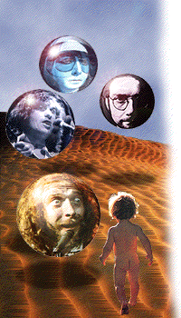

English version
Pulsa aquí para entrar en nuestra
tienda electrónica
de CDs, donde podrás
buscar
por títulos e intérpretes,
consultar nuestro catálogo
alfabético y ver los
últimos títulos recibidos
.
Te avisamos
de los nuevos lanzamientos
Imágenes de
rock progresivo
Lista correo
Galería
Escríbenos a
panymusica@thesaurus.net
Una realización de
Latitud 42
-
MBB
-
Thesaurus